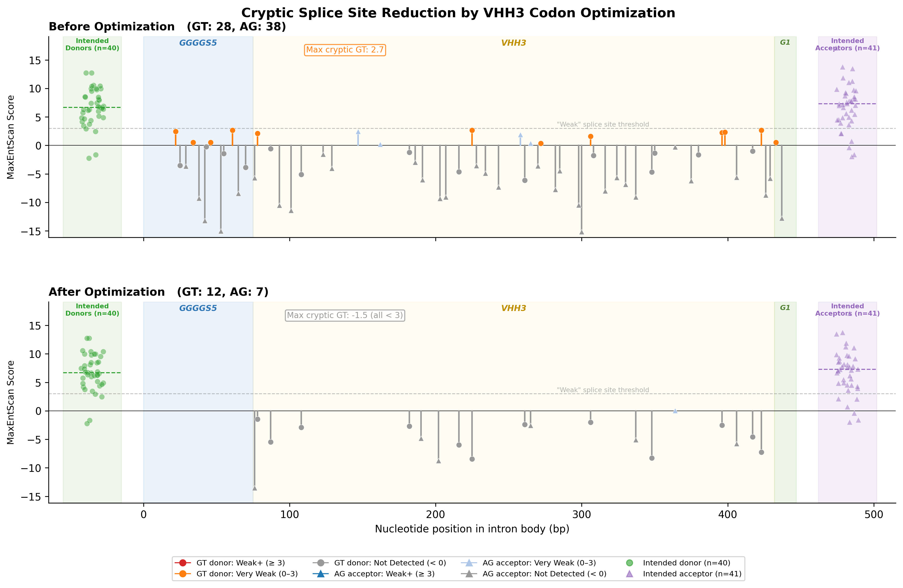

BEFORE
GT=28, AG=38
Max GT: 2.7 (Very Weak)
AFTER
GT=12, AG=7
Max GT: -1.5 (Not Detected)
REDUCTION
64% fewer sites
66 → 19 total
SEPARATION
Intended: 8-10+ MES
Cryptic: all < 0
CONFIRMED
All 19 remaining sites confirmed dead (MaxEnt ≤ 3.0, U1 ΔG > -8.1). Clear separation between intended donors and cryptic sites.
11 | CONFIDENTIAL